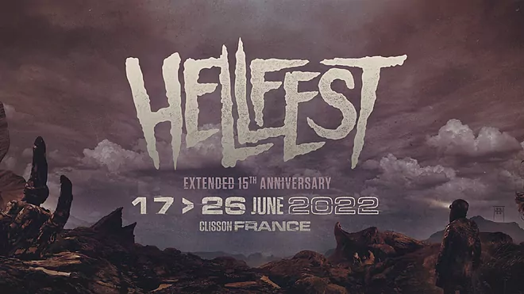
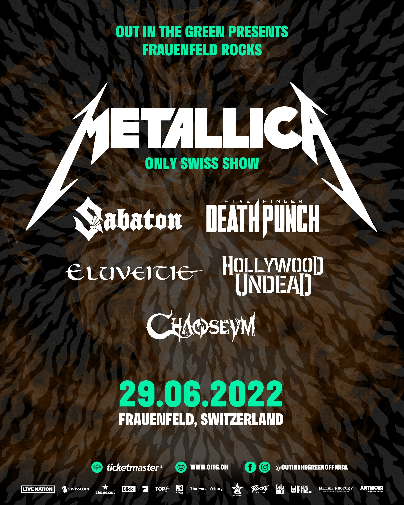
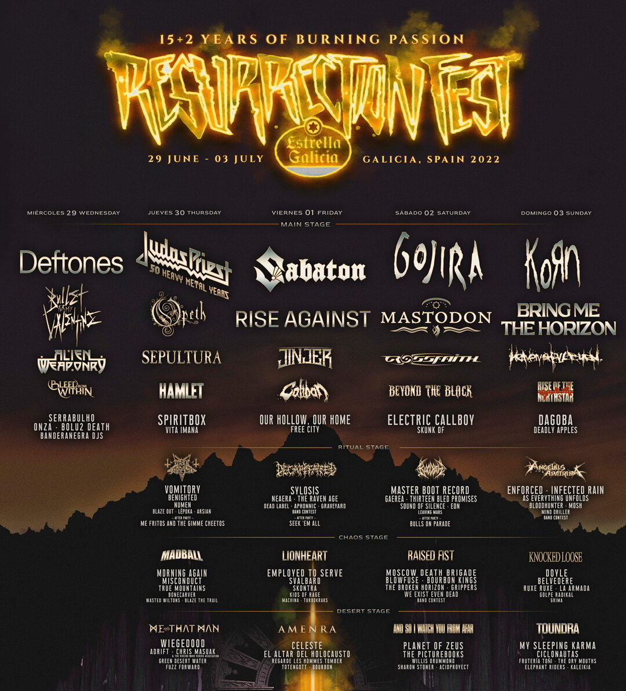

Siguientes conciertos
26 de Junio - Clisson, Francia
Sabaton se presenta en la Hellfest, uno de los festivales de música "extrema" más grandes de Europa una vez más en su 15vo aniversario.
Ubicacion:
29 de Junio - Frauenfeld, Suiza

Junto a otras legendarias bandas del rock y metal como Metallica, Sabaton tocará en el festival Frauenfeld Rocks, presentado por la empresa "Out in the Green".
Ubicación:
1 de Julio - Viveiro, España
En su 17ma edición, Sabaton se presenta en la Resurrection Fest en Galicia como la banda principal de su tercer día, junto a muchas otras increibles bandas de generos metal variados.
Ubicación:
Las proximas fechas se presentaran pronto!